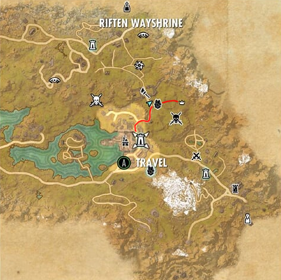

About us
Darkmoon's Call is a new order dedicated to the development and orginization of werewolves throughout the popular mmorpg game Elder Scrolls Online.
Darkmoon's Call recognizes the feeling of wanting to become a werewolf in the game, and we make it a reality, even for players that cannot or will not pay crowns to make that happen
What we do
- We gather at the shrine in Riften
- We gather like-minded individuals that desire to become werewolves
- We offer those that answer the call an oportunity to prospect for our Moonwalker Pack
- We meet regularly at the guildmaster's house to decide on weekly events and activities
- We boss dungeons because theres nothing like a dungeon full of werewolves
- We level up our pack leaders and beserkers
- We recruit more Werewolves.
Our hierarchy
- Alpha The head wolf and final decision maker in meetings or judgement call. leader of the pack
- Omega second in command and overseer of disputes among the pack
- General Keeper of the peace and right hand to the Alpha and Omega. Third in Command
- Captain Captains oversee matters within the pack and if necessary hand it off to the General for further consideration. Captains maintain order within the pack. Fourth in command.
- Moonwalker The moonwalkers are the meat and potatoes of the pack and without them Darkmoon's Call would not be possible. They are the warriors for which we gather. prospects should look to a Moonwalker for guidance or questions. Fifth in command. in the event of dispute that the Moonwalker's cannot settle fairly, they should contact a Captain for guidance
- Prospect A Prospect is one that has answered the Darkmoon's Call and awaits a desision from the pack. They will typically be turned into a werewolf in one week if accepted at the shrine in Riften and Welcomed into The Moonwalker Pack. Any issues or questions should be taken to a Moonwalker for support
The Rules
- Be Respectful Treat others in the pack in a courteous manner. If you do not want to be treated like a troll, do not act like a troll, plain and simple.
- Follow the hierarchy As we grow as a pack, the most important thing to remember is that with disorder comes chaos. Follow the hierarchy to insure that issues can be handled in an orderly fashion and one group does not get overwhelmed with issues.
- Meetings Meetings are not manditory, however serious changes in the direction of The Moonwalker Pack are made during these meetings. If you want your voice heard, show up for the meetings. Prospects are allowed to attend the meetings however, they are not yet a member of the pack, thus do not get a vote.
The Shrine
We meet weekly at the shrine to bite prospects that have been chosen it is located here

Contact
Having trouble reaching the guild? Can't find the shrine? Not clear about a recent change in the rules or hierarchy? Other issue? contact The Alpha directly Here